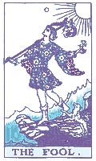

🔮 偉特塔羅單牌直覺速通大師
專為董事長打造・培養塔羅超準預測感悟・一牌 5 個生活視角深層透析 (白話精解範本版)
🎴 總牌庫: 78 張
✅ 已學過: 0 張 (0%)
⭐ 重點加強: 0 張
🎯 抽牌與研習範圍：
正位 (Upright)

愚者 (The Fool)
👁️ 視覺直覺凝視點 (第一眼看什麼？神秘符號與圖像解釋)
正在載入視覺符號與意象...
🔮 神準預測感悟 (求問者潛意識核心狀態透視)
正在感應卡牌能量場...
🗣️ 現場輔助說明金句 (教練式發問話術 · 讓來賓自白點頭)
正在生成現場破冰導引金句...
🌟 一張牌的 5 個生活視角剖析・牌情生動情境與五維實戰 (全息實戰學習)
依據每張卡牌的具體圖像細節（牌情），針對現代生活五大維度（事業・愛情・家庭・財富・人際）提供深度剖析與破局指引。
💼 事業與工作
行動 & 突破
正在分析職場與決策能量...
❤️ 愛情與情感
連結 & 共鳴
正在分析感情與親密互動...
🏡 家庭與親情
歸屬 & 根基
正在分析家庭環境與內在安全感...
💰 財富與投資
顯化 & 積累
正在分析金錢流動與資源格局...
👥 人際與貴人
社交 & 邊界
正在分析人際網絡與信任基石...